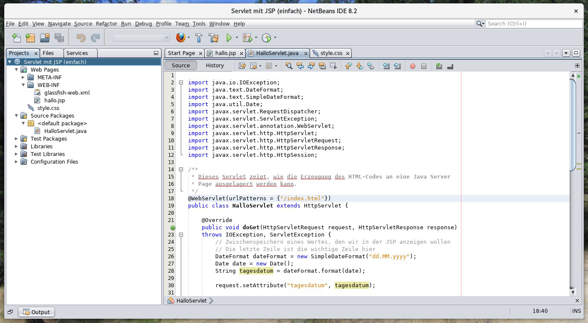

In diesem Kapitel bauen wir auf deinem Wissen zu HTTP und Java Server
Pages auf und vervollständigen nun das Bild vom Server. Du erfährst
hier, wie der serverseitige Quellcode einer Webanwendung überlicherweise
gegliedert ist lernst die Programmierung in Java als konkretes Beispiel
kennen. Mit diesem Wissen ausgerüstet kannst du dich dann auch in
vielen anderen Webframeworks schnell zurechtfinden.
public void service(HttpServletRequest request, HttpServletResponse response)
throws IOException, ServletEcxeption
Diese Methode kannst du überschreiben, wenn du wirklich auf alle HTTP-Anfragen reagieren willst,
egal welches Verb dabei verwendet wurde.
public void doGet(HttpServletRequest request, HttpServletResponse response) …
public void doPut(HttpServletRequest request, HttpServletResponse response) …
public void doPost(HttpServletRequest request, HttpServletResponse response) …
public void doDelete(HttpServletRequest request, HttpServletResponse response) …
Meistens ist es jedoch besser, eine dieser Methoden zu überschreiben. Denn dadurch kannst du gezielt
festlegen, wie sich das Servlet bei verschiedenen HTTP-Verben verhalten soll.
/**
* Dieses Beispiel zeigt die Verwendung der verschiedenen doXXX-Methoden.
*/
@WebServlet(urlPatterns = {"/"})
public class GetPostServlet extends HttpServlet {
/**
* Wir haben eine GET-Anfrage empfangen.
*/
@Override
public void doGet(HttpServletRequest request, HttpServletResponse response)
throws IOException, ServletException {
…
}
/**
* Wir haben eine POST-Anfrage empfangen.
*/
@Override
public void doPost(HttpServletRequest request, HttpServletResponse response)
throws IOException, ServletException {
…
}
}
Liefert den Pfad der URL, so wie er in der HTTP-Anfrage geschickt wurde. Der String
beinhaltet daher auch den Namen der Webanwendung, mit dem ja jeder URL beginnt (siehe
Screenshot).
public String getQueryString()
Liefert die Anfrageparameter aus der URL oder null, falls die URL keine
Anfrageparameter enthält.
public String getParameter(String name)
Liefert den Wert eines einzelnen Anfrageparameters aus der URL. Alternativ kann damit auch der
Wert eines Formularfelds ausgelesen werden, wenn ein HTML-Formular abgeschickt wurde.
public String getHeader(String name)
Liefert den Wert eines einzelnen Header Fields aus der HTTP-Anfrage oder null,
wenn es das Feld nicht gibt.
public HttpSession getSession()
Liefert den sogenannten Session Kontext zurück. Diesen kannst du als Notizblock nutzen 🗒️, um dir über eine
Anfrage hinaus benutzerspezifische Werte zu merken.
public RequestDispatcher getRequestDispatcher(String URL)
Dieses Monster benötigen wir später, um die Bearbeitung einer HTTP-Anfrage an eine Java Server Page
weiterzugeben. 👾
/**
* Dieses Beispiel zeigt den Aufruf einiger wichtiger Methoden
* von HttpServletRequest.
*/
@WebServlet(urlPatterns = {"/"})
public class RequestMethodenServlet extends HttpServlet {
/**
* Wir haben eine GET-Anfrage empfangen.
*/
@Override
public void doGet(HttpServletRequest request, HttpServletResponse response)
throws IOException, ServletException {
// Informationen aus der HTTP-Anfrage auslesen
String uri = request.getRequestURI();
String query = request.getQueryString();
String vornameParameter = request.getParameter("vorname");
String userAgent = request.getHeader("user-agent");
// Antwort senden
response.setContentType("text/plain");
PrintWriter toClient = response.getWriter();
toClient.println("Folgende Anfrage hast du geschickt");
toClient.println("==================================");
toClient.println("");
toClient.println("URL: " + uri);
toClient.println("Query String: " + query);
toClient.println("Parameter vorname: " + vornameParameter);
toClient.println("User Agent: " + userAgent);
toClient.flush();
}
}
public void setStatus(int code)
public void sendError(int code)
Setzt den Statuscode der HTTP-Antwort. Für jeden Statuscode gibt eine entsprechende Konstante,
zum Beispiel response.SC_NOT_FOUND. Im Gegensatz zu setStatus() schickt
sendError() die Antwort mit einer Standardfehlerseite sofort ab.
public void sendRedirect(String url)
Sendet den Stautscode 302 Redirect an den Browser und fordert ihn damit auf,
eine neue Seite zu laden.
void setContentType(String type)
Setzt das Header Field content-type, um dem Browser mitzuteilen, welches
Format die zurückgelieferten Daten haben. Der Wert type muss einem gültigen
MIME-Type entsprechen.
public PrintWriter getWriter()
Liefert einen PrintWriter zurück, mit dem der Response Body geschrieben werden kann.
Wichtig: Sobald du anfängst, etwas in den Datenstrom zu schreiben, kannst du keine anderen
Methoden von HttpServletResponse mehr aufrufen, da dadurch der Response Header
abgeschlossen wird.
/**
* Dieses Beispiel leitet den Aufrufer immer an Google weiter.
*/
@WebServlet(urlPatterns = {"/"})
public class RedirectServlet extends HttpServlet {
/**
* Wir haben eine GET-Anfrage empfangen.
*/
@Override
public void doGet(HttpServletRequest request, HttpServletResponse response)
throws IOException, ServletException {
response.sendRedirect("https://www.google.de");
}
}
import java.io.IOException;
import java.io.PrintWriter;
import javax.servlet.ServletException;
import javax.servlet.annotation.WebServlet;
import javax.servlet.http.HttpServlet;
import javax.servlet.http.HttpServletRequest;
import javax.servlet.http.HttpServletResponse;
import javax.servlet.http.HttpSession;
/**
* Dieses Servlet zeigt, wie du Formulareingaben richtig behandelt werden.
* Es zeigt, dass bei einer GET-Anfrage das Formular geschickt wird und
* dieses seine Daten per POST an den Server schickt. Bei einer POST-Anfrage
* müssen daher die Formulardaten ausgelesen und verarbeitet werden, woraufhin
* der Browser durch einen Redirect zum Neuladen der Seite gezwungen wird.
*/
@WebServlet(urlPatterns = {"/formular/"})
public class FormularServlet extends HttpServlet{
/**
* GET-Anfrage: Liefert eine HTML-Seite mit einem Formular
*/
@Override
public void doGet(HttpServletRequest request, HttpServletResponse response)
throws IOException, ServletException {
// Anfang der HTML-Seite
response.setContentType("text/html");
response.setCharacterEncoding("utf-8");
PrintWriter toClient = response.getWriter();
toClient.println("<!DOCTYPE html>");
toClient.println("<html>");
toClient.println(" <head>");
toClient.println(" <meta charset='utf-8' />");
toClient.println(" <title>Hallo-Welt-Formular</title>");
toClient.println(" </head>");
toClient.println(" <body>");
// Hier nun das eigentliche Formular
toClient.println(" <form method='POST'>");
toClient.println(" Wie heißt du?");
toClient.println(" <input name='vorname' type='text' />");
toClient.println(" <input type='submit' value='Abschicken' />");
toClient.println(" </form>");
// Zuletzt eingegebener Vorname, falls vorhanden
// Der Wert wird in der doPost()-Methode im Session Kontext abgelegt
HttpSession session = request.getSession();
String vorname = (String) session.getAttribute("vorname");
if (vorname != null) {
toClient.println(" <p>");
toClient.println(" Hallo, " + vorname + "!");
toClient.println(" </p>");
}
// Abschluss der Seite
toClient.println(" </body>");
toClient.println("</html>");
toClient.flush();
}
/**
* POST-Anfrage: Verarbeitet die Formulareingaben und zwingt den Browser
* danach, die Seite neuzuladen.
*/
@Override
public void doPost(HttpServletRequest request, HttpServletResponse response)
throws IOException, ServletException {
// Eingebenen Vornamen auslesen
String vorname = request.getParameter("vorname");
// Vornamen im Session Kontext speichern
HttpSession session = request.getSession();
session.setAttribute("vorname", vorname);
// Browser zwingen, die Seite mit einem GET neuzuladen
response.sendRedirect(request.getRequestURI());
}
}
Der HTML-Code aus Sicht des Browsers nach dem ersten Aufruf. In den Entwicklerwerkzeugen
wurde nur eine GET-Anfrage aufgezeichnet.
Der neue HTML-Code aus Sicht des Browsers. In den Entwicklerwerkzeugen sieht man schön,
wie erst ein POST und dann ein GET an den Server gesendet wird.
So sieht das Netbeans-Projekt aus. Wenn du es nachbauen willst, musst du
exakt die Verzeichnisstruktur einhalten.

Dies ist das Servlet, dass bei jeder GET- und POST-Anfrage durchlaufen wird.
import java.io.IOException;
import java.text.DateFormat;
import java.text.SimpleDateFormat;
import java.util.Date;
import javax.servlet.RequestDispatcher;
import javax.servlet.ServletException;
import javax.servlet.annotation.WebServlet;
import javax.servlet.http.HttpServlet;
import javax.servlet.http.HttpServletRequest;
import javax.servlet.http.HttpServletResponse;
import javax.servlet.http.HttpSession;
/**
* Dieses Servlet zeigt, wie die Erzeugung des HTML-Codes an eine Java Server
* Page ausgelagert werden kann.
*/
@WebServlet(urlPatterns = {"/index.html"})
public class HalloServlet extends HttpServlet {
@Override
public void doGet(HttpServletRequest request, HttpServletResponse response)
throws IOException, ServletException {
// Zwischenspeichern eines Wertes, den wir in der JSP anzeigen wollen
// Die letzte Zeile ist die wichtige Zeile hier
DateFormat dateFormat = new SimpleDateFormat("dd.MM.yyyy");
Date date = new Date();
String tagesdatum = dateFormat.format(date);
request.setAttribute("tagesdatum", tagesdatum);
// Anfrage an eine JSP weiterleiten, um damit den HTML-Code
// der Seite zu generieren
RequestDispatcher dispatcher = request.getRequestDispatcher("/WEB-INF/hallo.jsp");
dispatcher.forward(request, response);
// Werte im Session Kontext entfernen, damit wir beim nächsten mal
// wieder von vorne anfangen
HttpSession session = request.getSession();
session.removeAttribute("vorname");
session.removeAttribute("nachname");
}
@Override
public void doPost(HttpServletRequest request, HttpServletResponse response)
throws IOException, ServletException {
// Eingegebene Werte auslesen
String vorname = request.getParameter("vorname");
String nachname = request.getParameter("nachname");
// Werte im Session Kontext ablegen
HttpSession session = request.getSession();
session.setAttribute("vorname", vorname);
session.setAttribute("nachname", nachname);
// Und die Seite nochmal laden lassen
response.sendRedirect(request.getRequestURI());
}
}
Innerhalb des Servlets wird nun kein HTML-Code mehr erzeugt. Das macht die folgende JSP für uns. Die Datei muss WEB-INF/hallo.jsp heißen!
<%@page contentType="text/html" pageEncoding="UTF-8"%>
<%@taglib uri="http://java.sun.com/jsp/jstl/core" prefix="c"%>
<%@taglib uri="http://java.sun.com/jsp/jstl/functions" prefix="fn"%>
<!DOCTYPE html>
<html>
<head>
<meta charset="utf-8" />
<title>Hallo, Welt!</title>
<link rel="stylesheet" href="style.css" />
</head>
<body>
<div class="container">
<!-- Eingabefelder, nur vor dem Abschicken anzeigen -->
<c:if test="${vorname == null}">
<h1>Wie heißt du?</h1>
<form method="POST">
<input name="vorname" type="text" placeholder="Vorname" />
<input name="nachname" type="text" placeholder="Nachname" />
<input type="submit" value="Abschicken" />
</form>
</c:if>
<!-- Begrüßung, nur nach dem Abschicken anzeigen -->
<c:if test="${vorname != null}">
<h1>Hallo, ${vorname} ${nachname}!</h2>
<h2>Sei gegrüßt!</h2>
<a href="">Nochmal</a>
</c:if>
<!-- Aktuelles Datum immer anzeigen -->
<p>
<small>
Heute ist der ${tagesdatum}.
</small>
</p>
</div>
</body>
</html>
Dieses mal gönnen wir uns auch ein Stylesheet, damit es ordentlich aussieht. Die Datei muss style.css heißen.